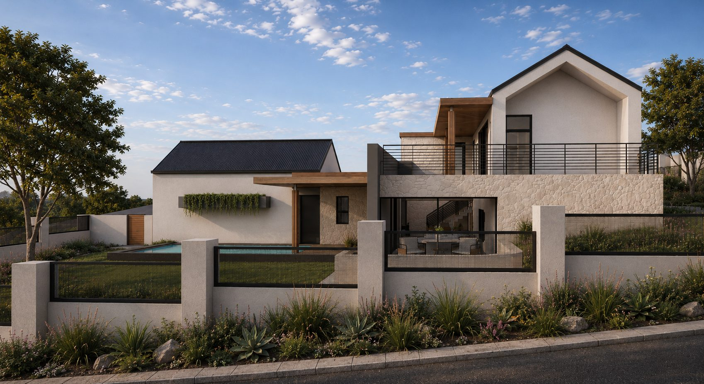

Residential design from concept sketch to construction — new homes, additions and alterations across South Africa.
EJC Architecture is the practice of Eduan Coetzer, a SACAP-registered architectural professional. The studio works closely with each client — from first sketch to final detail — to deliver homes defined by honest forms, disciplined proportions and refined detailing.
This project transforms an existing dwelling into a contemporary boutique bed and breakfast, designed to balance guest comfort with the owner’s privacy. The layout carefully separates the private residence, office, and communal guest areas while creating a welcoming hospitality experience.
The development comprises four self-contained guest suites, each featuring a bedroom, en-suite bathroom, kitchenette, and private patio or balcony. Shared amenities include a communal lounge, bar and kitchen, and a rooftop braai area for guests to relax and socialise.
Ideally located in the heart of Clubview, Centurion, the property offers convenient access to major highways, schools, shopping centres, sporting facilities, and entertainment, making it an ideal destination for both business and leisure travellers.
Working closely with a young couple, this additions and alterations project reimagines their home around a more connected and contemporary way of living. Together, we transformed a series of enclosed rooms into an open-plan layout that enhances everyday family life and creates welcoming spaces for entertaining. Exposed roof trusses and elevated ceilings introduce warmth, volume and architectural character, creating a refined spatial experience.
With a carefully managed budget, the project focused on smart design decisions and efficient construction methods to achieve a mid- to high-end result. Close collaboration between the client, contractor and EJC Architecture ensured every intervention delivered maximum value without compromising on quality or architectural intent.
A refined additions and alterations project that enhances the home’s architectural presence while respecting its original character. The design introduces a clearly defined entrance and a purpose-built sports car gallery, creating a stronger street presence and a memorable arrival experience.
Through disciplined proportions, clean geometry, and the thoughtful reinterpretation of existing forms and materials, the architecture achieves a cohesive, minimalist expression where every intervention feels deliberate, balanced, and timeless.
Designed for a sloping, north-facing site, this contemporary residence embraces its setting through expansive glazing, generous covered patios, and seamless indoor-outdoor living.
The home’s clean architectural lines, carefully framed views, and integrated swimming pool create a refined family environment that maximises natural light, comfort, and the exceptional outlook across the estate.
Set in the quiet coastal town of Saint Helena Bay, this home draws inspiration from the timeless simplicity of Cape Dutch architecture. The design is defined by honest forms, carefully considered proportions, and refined detailing.
Set within the indigenous landscape of The Rest Estate, this contemporary residence is carefully positioned to embrace the site’s natural beauty and sweeping views across Nelspruit. The stepped design follows the terrain, creating a series of interconnected living spaces that maximise privacy while opening towards the surrounding landscape.
Natural stone, warm timber and textured plaster form a restrained material palette that complements the estate’s bushveld character, allowing the home to blend seamlessly with its environment. Designed to celebrate outdoor living, the residence offers a calm, timeless retreat that responds sensitively to both the site and its remarkable setting.